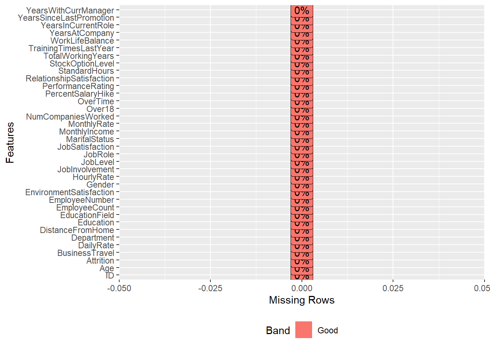
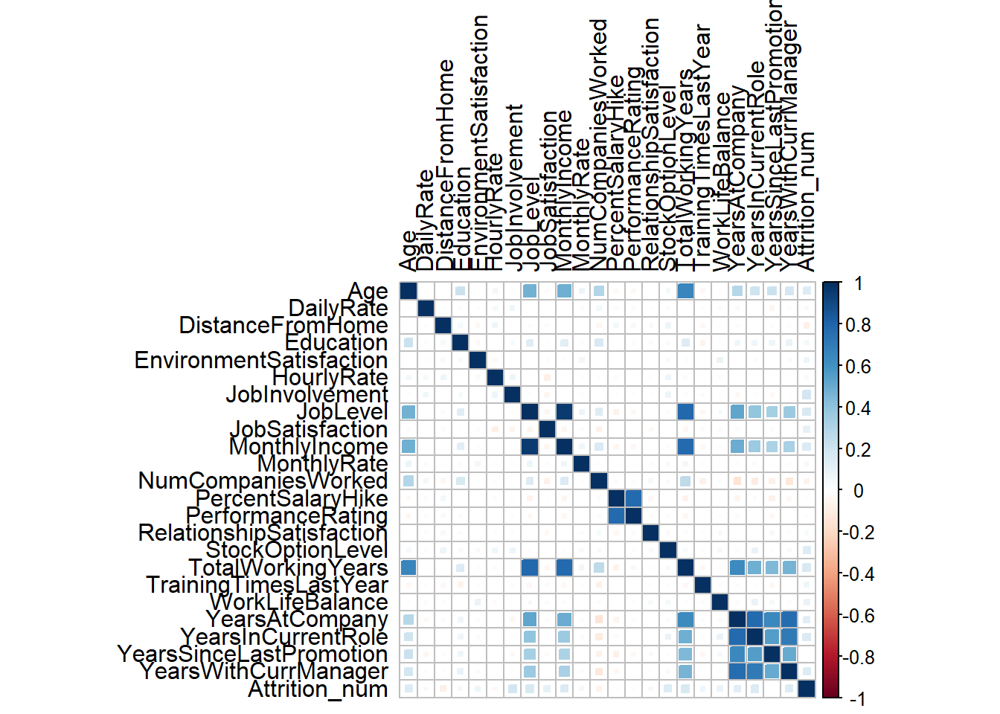
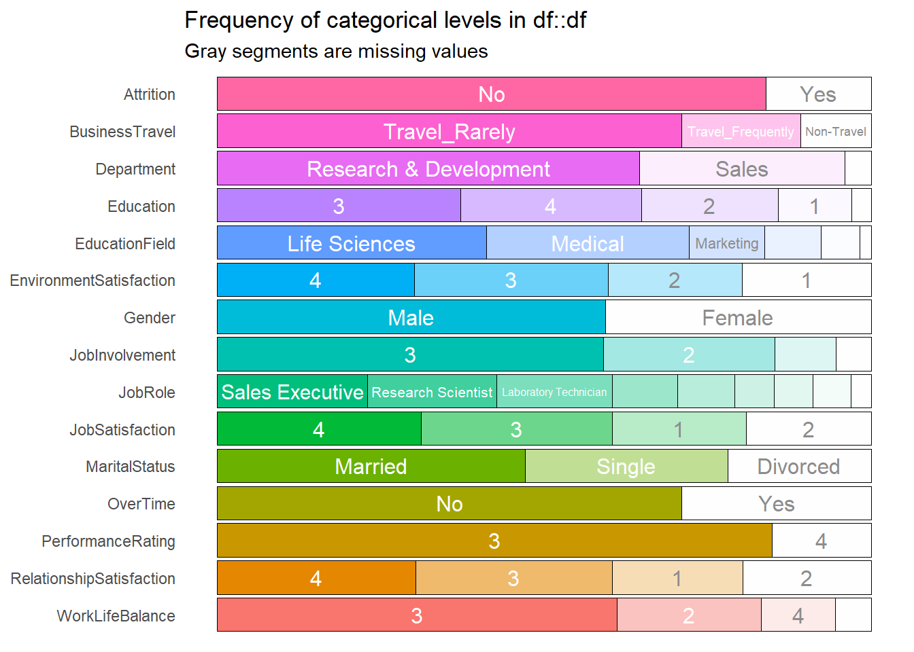
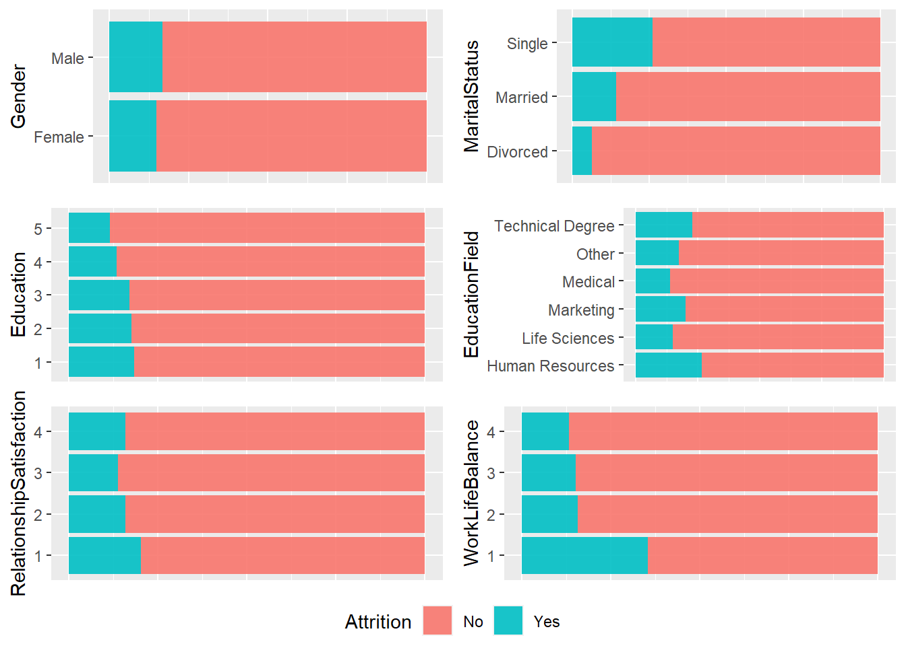
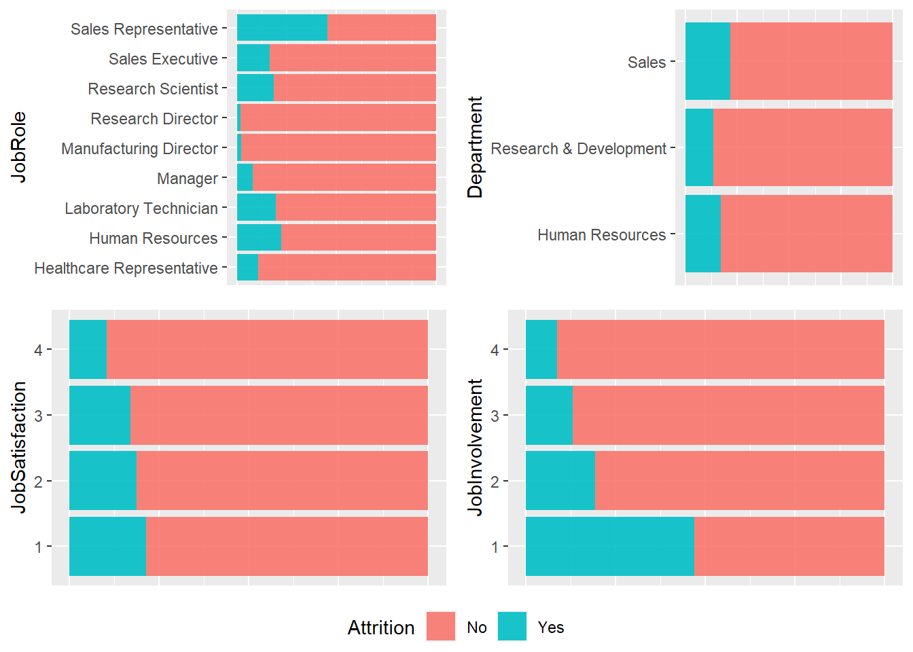
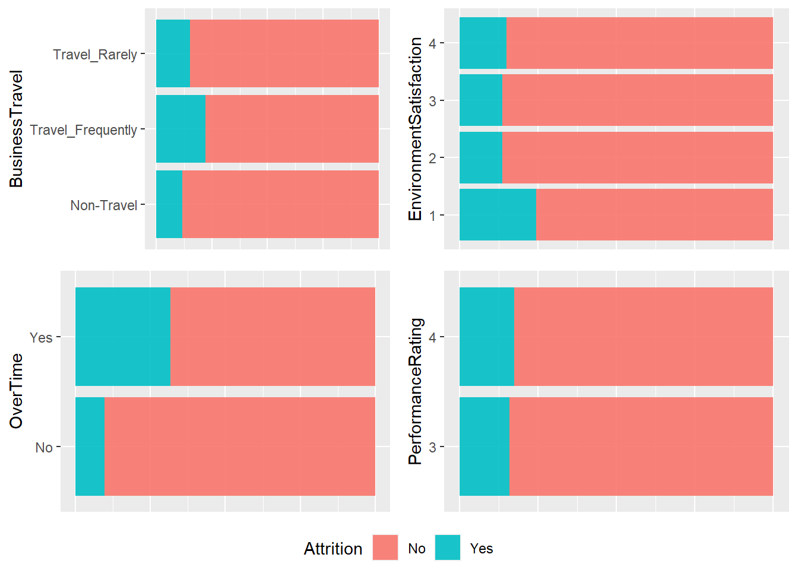
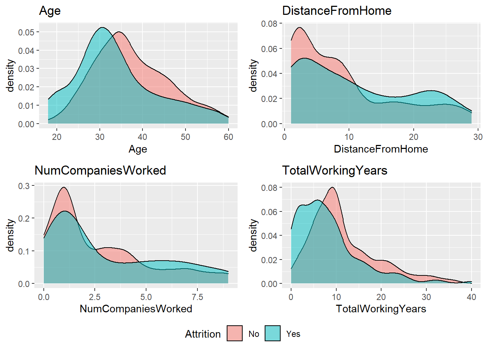
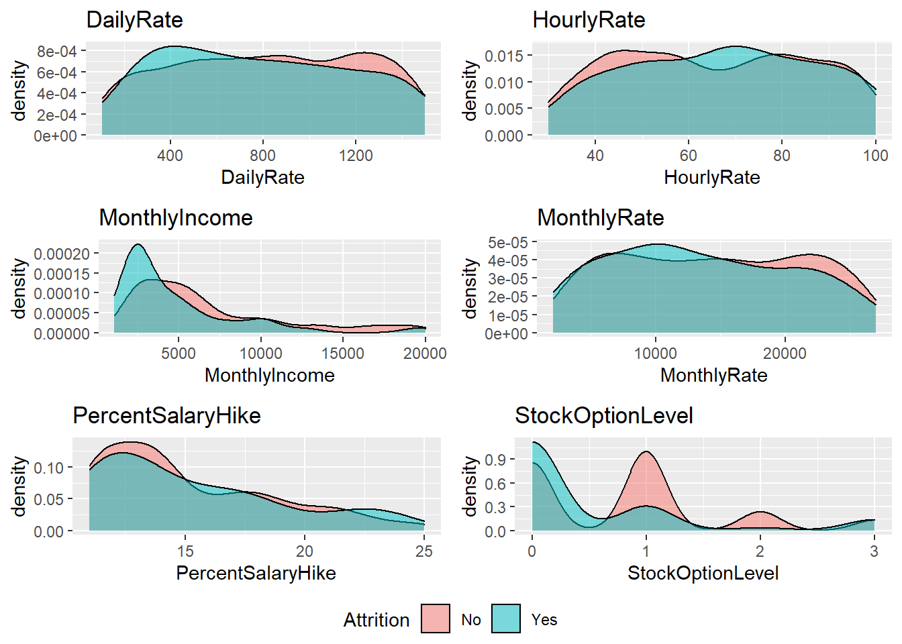
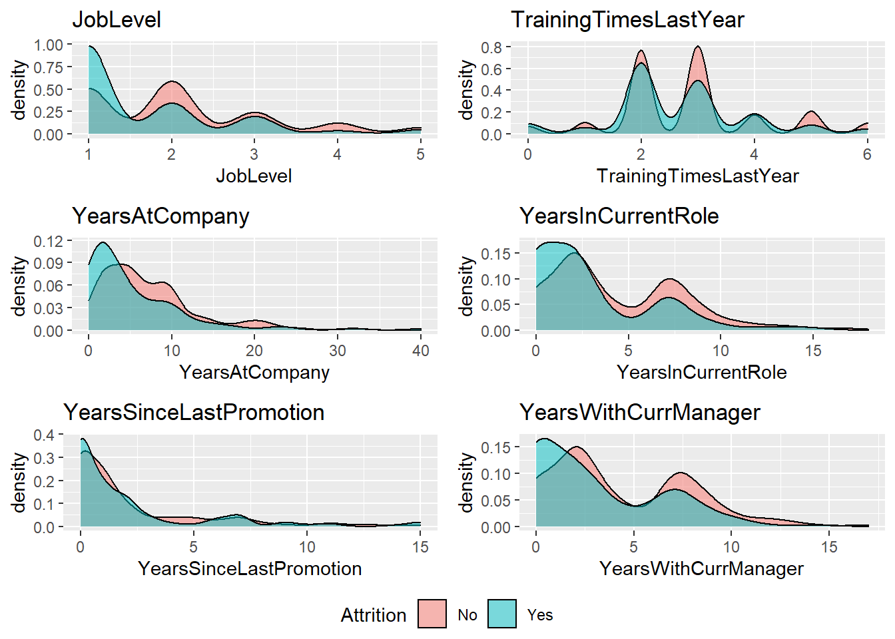

The CEO and CFO of Frito Lay have provided me with a dataset for the statistics of their employees. They have commissioned me to identify the top factors that lead to employee attrition and evidence provided by analysis to back them up. They are also interested in trends within the dataset, as well as machine learning models to predict attrition and monthly income of their employees.
Things we have found include but are not limited to:
To close off the analysis, I will provide 2 models that I believe rank amongst the best when predicting employee attitrion and mothnly income that anyone can use for their organizations.
Click here for presentation!
getwd()## [1] "C:/Users/dnguy/Desktop/0 SMU/Portfolio"df = read.csv("CaseStudy2-data.csv")
df_no_attrition = read.csv("CaseStudy2CompSet-No-Attrition.csv")
df_no_salary = read.csv("CaseStudy2CompSet-No-Salary.csv")str(df)## 'data.frame': 870 obs. of 36 variables:
## $ ID : int 1 2 3 4 5 6 7 8 9 10 ...
## $ Age : int 32 40 35 32 24 27 41 37 34 34 ...
## $ Attrition : chr "No" "No" "No" "No" ...
## $ BusinessTravel : chr "Travel_Rarely" "Travel_Rarely" "Travel_Frequently" "Travel_Rarely" ...
## $ DailyRate : int 117 1308 200 801 567 294 1283 309 1333 653 ...
## $ Department : chr "Sales" "Research & Development" "Research & Development" "Sales" ...
## $ DistanceFromHome : int 13 14 18 1 2 10 5 10 10 10 ...
## $ Education : int 4 3 2 4 1 2 5 4 4 4 ...
## $ EducationField : chr "Life Sciences" "Medical" "Life Sciences" "Marketing" ...
## $ EmployeeCount : int 1 1 1 1 1 1 1 1 1 1 ...
## $ EmployeeNumber : int 859 1128 1412 2016 1646 733 1448 1105 1055 1597 ...
## $ EnvironmentSatisfaction : int 2 3 3 3 1 4 2 4 3 4 ...
## $ Gender : chr "Male" "Male" "Male" "Female" ...
## $ HourlyRate : int 73 44 60 48 32 32 90 88 87 92 ...
## $ JobInvolvement : int 3 2 3 3 3 3 4 2 3 2 ...
## $ JobLevel : int 2 5 3 3 1 3 1 2 1 2 ...
## $ JobRole : chr "Sales Executive" "Research Director" "Manufacturing Director" "Sales Executive" ...
## $ JobSatisfaction : int 4 3 4 4 4 1 3 4 3 3 ...
## $ MaritalStatus : chr "Divorced" "Single" "Single" "Married" ...
## $ MonthlyIncome : int 4403 19626 9362 10422 3760 8793 2127 6694 2220 5063 ...
## $ MonthlyRate : int 9250 17544 19944 24032 17218 4809 5561 24223 18410 15332 ...
## $ NumCompaniesWorked : int 2 1 2 1 1 1 2 2 1 1 ...
## $ Over18 : chr "Y" "Y" "Y" "Y" ...
## $ OverTime : chr "No" "No" "No" "No" ...
## $ PercentSalaryHike : int 11 14 11 19 13 21 12 14 19 14 ...
## $ PerformanceRating : int 3 3 3 3 3 4 3 3 3 3 ...
## $ RelationshipSatisfaction: int 3 1 3 3 3 3 1 3 4 2 ...
## $ StandardHours : int 80 80 80 80 80 80 80 80 80 80 ...
## $ StockOptionLevel : int 1 0 0 2 0 2 0 3 1 1 ...
## $ TotalWorkingYears : int 8 21 10 14 6 9 7 8 1 8 ...
## $ TrainingTimesLastYear : int 3 2 2 3 2 4 5 5 2 3 ...
## $ WorkLifeBalance : int 2 4 3 3 3 2 2 3 3 2 ...
## $ YearsAtCompany : int 5 20 2 14 6 9 4 1 1 8 ...
## $ YearsInCurrentRole : int 2 7 2 10 3 7 2 0 1 2 ...
## $ YearsSinceLastPromotion : int 0 4 2 5 1 1 0 0 0 7 ...
## $ YearsWithCurrManager : int 3 9 2 7 3 7 3 0 0 7 ...table(is.na(df))##
## FALSE
## 31320plot_missing(df)
prop.table(table(df$Attrition, useNA = "ifany"))##
## No Yes
## 0.8390805 0.1609195df_Attrition = data.frame(Attrition = table(df$Attrition, useNA = "ifany"))
df_Attrition## Attrition.Var1 Attrition.Freq
## 1 No 730
## 2 Yes 140# Identify the names of zero variance columns
zero_var_col_names = nearZeroVar(df, names = TRUE)
zero_var_col_names## [1] "EmployeeCount" "Over18" "StandardHours"# Remove all zero variance columns
df = drop_columns(df, zero_var_col_names)
# Remove "identification" columns that are not useful for analysis
df = df %>% select(-ID, -EmployeeNumber)attritionData <- df
str(attritionData$Attrition)## chr [1:870] "No" "No" "No" "No" "No" "No" "No" "No" "No" "No" "No" "No" ...attritionData$Attrition[attritionData$Attrition == "Yes"] = 0
attritionData$Attrition[attritionData$Attrition == "No"] = 1
attritionData$Attrition_num <- as.numeric(as.character(attritionData$Attrition))
str(select_if(attritionData, is.numeric))## 'data.frame': 870 obs. of 24 variables:
## $ Age : int 32 40 35 32 24 27 41 37 34 34 ...
## $ DailyRate : int 117 1308 200 801 567 294 1283 309 1333 653 ...
## $ DistanceFromHome : int 13 14 18 1 2 10 5 10 10 10 ...
## $ Education : int 4 3 2 4 1 2 5 4 4 4 ...
## $ EnvironmentSatisfaction : int 2 3 3 3 1 4 2 4 3 4 ...
## $ HourlyRate : int 73 44 60 48 32 32 90 88 87 92 ...
## $ JobInvolvement : int 3 2 3 3 3 3 4 2 3 2 ...
## $ JobLevel : int 2 5 3 3 1 3 1 2 1 2 ...
## $ JobSatisfaction : int 4 3 4 4 4 1 3 4 3 3 ...
## $ MonthlyIncome : int 4403 19626 9362 10422 3760 8793 2127 6694 2220 5063 ...
## $ MonthlyRate : int 9250 17544 19944 24032 17218 4809 5561 24223 18410 15332 ...
## $ NumCompaniesWorked : int 2 1 2 1 1 1 2 2 1 1 ...
## $ PercentSalaryHike : int 11 14 11 19 13 21 12 14 19 14 ...
## $ PerformanceRating : int 3 3 3 3 3 4 3 3 3 3 ...
## $ RelationshipSatisfaction: int 3 1 3 3 3 3 1 3 4 2 ...
## $ StockOptionLevel : int 1 0 0 2 0 2 0 3 1 1 ...
## $ TotalWorkingYears : int 8 21 10 14 6 9 7 8 1 8 ...
## $ TrainingTimesLastYear : int 3 2 2 3 2 4 5 5 2 3 ...
## $ WorkLifeBalance : int 2 4 3 3 3 2 2 3 3 2 ...
## $ YearsAtCompany : int 5 20 2 14 6 9 4 1 1 8 ...
## $ YearsInCurrentRole : int 2 7 2 10 3 7 2 0 1 2 ...
## $ YearsSinceLastPromotion : int 0 4 2 5 1 1 0 0 0 7 ...
## $ YearsWithCurrManager : int 3 9 2 7 3 7 3 0 0 7 ...
## $ Attrition_num : num 1 1 1 1 1 1 1 1 1 1 ...
## - attr(*, ".internal.selfref")=<externalptr>corrplot(cor(select_if(attritionData, is.numeric)), method = "square", tl.col = 'black')
model_formula = c("Age", "DailyRate", "Education", "EnvironmentSatisfaction",
"JobInvolvement", "JobLevel", "JobSatisfaction", "MonthlyIncome",
"MonthlyRate", "RelationshipSatisfaction", "StockOptionLevel",
"TotalWorkingYears", "TrainingTimesLastYear", "WorkLifeBalance",
"YearsAtCompany", "YearsInCurrentRole", "YearsWithCurrManager")We are giving our model the significant variables seen from the plot above.
# Convert character variables into factors
df[sapply(df, is.character)] = lapply(df[sapply(df, is.character)], as.factor)
# Numeric variables with a categorical nature are converted into factors
df_numeric_cat_vars = df %>% select(Education, EnvironmentSatisfaction, JobInvolvement,
JobSatisfaction, PerformanceRating,
RelationshipSatisfaction,
WorkLifeBalance) %>% names()
df[df_numeric_cat_vars] = lapply(df[df_numeric_cat_vars], as.factor)
# Sanity check
str(df)## 'data.frame': 870 obs. of 31 variables:
## $ Age : int 32 40 35 32 24 27 41 37 34 34 ...
## $ Attrition : Factor w/ 2 levels "No","Yes": 1 1 1 1 1 1 1 1 1 1 ...
## $ BusinessTravel : Factor w/ 3 levels "Non-Travel","Travel_Frequently",..: 3 3 2 3 2 2 3 3 3 2 ...
## $ DailyRate : int 117 1308 200 801 567 294 1283 309 1333 653 ...
## $ Department : Factor w/ 3 levels "Human Resources",..: 3 2 2 3 2 2 2 3 3 2 ...
## $ DistanceFromHome : int 13 14 18 1 2 10 5 10 10 10 ...
## $ Education : Factor w/ 5 levels "1","2","3","4",..: 4 3 2 4 1 2 5 4 4 4 ...
## $ EducationField : Factor w/ 6 levels "Human Resources",..: 2 4 2 3 6 2 4 2 2 6 ...
## $ EnvironmentSatisfaction : Factor w/ 4 levels "1","2","3","4": 2 3 3 3 1 4 2 4 3 4 ...
## $ Gender : Factor w/ 2 levels "Female","Male": 2 2 2 1 1 2 2 1 1 2 ...
## $ HourlyRate : int 73 44 60 48 32 32 90 88 87 92 ...
## $ JobInvolvement : Factor w/ 4 levels "1","2","3","4": 3 2 3 3 3 3 4 2 3 2 ...
## $ JobLevel : int 2 5 3 3 1 3 1 2 1 2 ...
## $ JobRole : Factor w/ 9 levels "Healthcare Representative",..: 8 6 5 8 7 5 7 8 9 1 ...
## $ JobSatisfaction : Factor w/ 4 levels "1","2","3","4": 4 3 4 4 4 1 3 4 3 3 ...
## $ MaritalStatus : Factor w/ 3 levels "Divorced","Married",..: 1 3 3 2 3 1 2 1 2 2 ...
## $ MonthlyIncome : int 4403 19626 9362 10422 3760 8793 2127 6694 2220 5063 ...
## $ MonthlyRate : int 9250 17544 19944 24032 17218 4809 5561 24223 18410 15332 ...
## $ NumCompaniesWorked : int 2 1 2 1 1 1 2 2 1 1 ...
## $ OverTime : Factor w/ 2 levels "No","Yes": 1 1 1 1 2 1 2 2 2 1 ...
## $ PercentSalaryHike : int 11 14 11 19 13 21 12 14 19 14 ...
## $ PerformanceRating : Factor w/ 2 levels "3","4": 1 1 1 1 1 2 1 1 1 1 ...
## $ RelationshipSatisfaction: Factor w/ 4 levels "1","2","3","4": 3 1 3 3 3 3 1 3 4 2 ...
## $ StockOptionLevel : int 1 0 0 2 0 2 0 3 1 1 ...
## $ TotalWorkingYears : int 8 21 10 14 6 9 7 8 1 8 ...
## $ TrainingTimesLastYear : int 3 2 2 3 2 4 5 5 2 3 ...
## $ WorkLifeBalance : Factor w/ 4 levels "1","2","3","4": 2 4 3 3 3 2 2 3 3 2 ...
## $ YearsAtCompany : int 5 20 2 14 6 9 4 1 1 8 ...
## $ YearsInCurrentRole : int 2 7 2 10 3 7 2 0 1 2 ...
## $ YearsSinceLastPromotion : int 0 4 2 5 1 1 0 0 0 7 ...
## $ YearsWithCurrManager : int 3 9 2 7 3 7 3 0 0 7 ...
## - attr(*, ".internal.selfref")=<externalptr># Inspect the categorical variables with a cool plot
show_plot(inspect_cat(df))
# Plot function
cat_vs_cat_plot <- function(df, x,y){
ggplot(data = df, aes_string(x = x, fill = y)) +
geom_bar(position = "fill", alpha = 0.9) +
coord_flip() +
theme(legend.position="none",
axis.title.x=element_blank(),
axis.text.x=element_blank(),
axis.ticks.x=element_blank(),
plot.title = element_text(size = 5))
}
# Identify the names of the categorical variables
categorical_variables = df %>% select(-Attrition) %>% select_if(is.factor) %>% names()
categorical_variables## [1] "BusinessTravel" "Department"
## [3] "Education" "EducationField"
## [5] "EnvironmentSatisfaction" "Gender"
## [7] "JobInvolvement" "JobRole"
## [9] "JobSatisfaction" "MaritalStatus"
## [11] "OverTime" "PerformanceRating"
## [13] "RelationshipSatisfaction" "WorkLifeBalance"personal_cat_plot_list <-lapply(categorical_variables[c(6, 10, 3, 4, 13, 14)],
function(x) cat_vs_cat_plot(df, x, "Attrition"))
ggarrange(plotlist = personal_cat_plot_list, common.legend = TRUE, legend="bottom",
nrow = 3, ncol = 2)
Attrition:
work_cat_plot_list <-lapply(categorical_variables[c(8, 2, 9, 7)],
function(x) cat_vs_cat_plot(df, x, "Attrition"))
ggarrange(plotlist = work_cat_plot_list, common.legend = TRUE, legend="bottom",
nrow = 2, ncol = 2)
Attrition:
work_cat_plot_list <-lapply(categorical_variables[c(1, 5, 11, 12)],
function(x) cat_vs_cat_plot(df, x, "Attrition"))
ggarrange(plotlist = work_cat_plot_list, common.legend = TRUE, legend="bottom",
nrow = 2, ncol = 2)
Attrition:
numerical_variables_names = df %>% select_if(is.numeric) %>% names()
numerical_variables_names## [1] "Age" "DailyRate"
## [3] "DistanceFromHome" "HourlyRate"
## [5] "JobLevel" "MonthlyIncome"
## [7] "MonthlyRate" "NumCompaniesWorked"
## [9] "PercentSalaryHike" "StockOptionLevel"
## [11] "TotalWorkingYears" "TrainingTimesLastYear"
## [13] "YearsAtCompany" "YearsInCurrentRole"
## [15] "YearsSinceLastPromotion" "YearsWithCurrManager"p1 <- df %>% ggplot(aes(x = Age, fill = Attrition)) +
geom_density(alpha = 0.5) +
#theme(axis.text.x = element_text(size =7,angle = 45, hjust = 1),axis.title.x=element_blank()) +
ggtitle("Age")
p2 <- df %>% ggplot(aes(x = DailyRate, fill = Attrition)) +
geom_density(alpha = 0.5) +
#theme(axis.text.x = element_text(size =7,angle = 45, hjust = 1),axis.title.x=element_blank()) +
ggtitle("DailyRate")
p3 <- df %>% ggplot(aes(x = DistanceFromHome, fill = Attrition)) +
geom_density(alpha = 0.5) +
#theme(axis.text.x = element_text(size =7,angle = 45, hjust = 1),axis.title.x=element_blank()) +
ggtitle("DistanceFromHome")
p4 <- df %>% ggplot(aes(x = HourlyRate, fill = Attrition)) +
geom_density(alpha = 0.5) +
#theme(axis.text.x = element_text(size =7,angle = 45, hjust = 1),axis.title.x=element_blank()) +
ggtitle("HourlyRate")
p5 <- df %>% ggplot(aes(x = JobLevel, fill = Attrition)) +
geom_density(alpha = 0.5) +
#theme(axis.text.x = element_text(size =7,angle = 45, hjust = 1),axis.title.x=element_blank()) +
ggtitle("JobLevel")
p6 <- df %>% ggplot(aes(x = MonthlyIncome, fill = Attrition)) +
geom_density(alpha = 0.5) +
#theme(axis.text.x = element_text(size =7,angle = 45, hjust = 1),axis.title.x=element_blank()) +
ggtitle("MonthlyIncome")
p7 <- df %>% ggplot(aes(x = MonthlyRate, fill = Attrition)) +
geom_density(alpha = 0.5) +
#theme(axis.text.x = element_text(size =7,angle = 45, hjust = 1),axis.title.x=element_blank()) +
ggtitle("MonthlyRate")
p8 <- df %>% ggplot(aes(x = NumCompaniesWorked, fill = Attrition)) +
geom_density(alpha = 0.5) +
#theme(axis.text.x = element_text(size =7,angle = 45, hjust = 1),axis.title.x=element_blank()) +
ggtitle("NumCompaniesWorked")
p9 <- df %>% ggplot(aes(x = PercentSalaryHike, fill = Attrition)) +
geom_density(alpha = 0.5) +
#theme(axis.text.x = element_text(size =7,angle = 45, hjust = 1),axis.title.x=element_blank()) +
ggtitle("PercentSalaryHike")
p10 <- df %>% ggplot(aes(x = StockOptionLevel, fill = Attrition)) +
geom_density(alpha = 0.5) +
#theme(axis.text.x = element_text(size =7,angle = 45, hjust = 1),axis.title.x=element_blank()) +
ggtitle("StockOptionLevel")
p11 <- df %>% ggplot(aes(x = TotalWorkingYears, fill = Attrition)) +
geom_density(alpha = 0.5) +
#theme(axis.text.x = element_text(size =7,angle = 45, hjust = 1),axis.title.x=element_blank()) +
ggtitle("TotalWorkingYears")
p12 <- df %>% ggplot(aes(x = TrainingTimesLastYear, fill = Attrition)) +
geom_density(alpha = 0.5) +
#theme(axis.text.x = element_text(size =7,angle = 45, hjust = 1),axis.title.x=element_blank()) +
ggtitle("TrainingTimesLastYear")
p13 <- df %>% ggplot(aes(x = YearsAtCompany, fill = Attrition)) +
geom_density(alpha = 0.5) +
#theme(axis.text.x = element_text(size =7,angle = 45, hjust = 1),axis.title.x=element_blank()) +
ggtitle("YearsAtCompany")
p14 <- df %>% ggplot(aes(x = YearsInCurrentRole, fill = Attrition)) +
geom_density(alpha = 0.5) +
#theme(axis.text.x = element_text(size =7,angle = 45, hjust = 1),axis.title.x=element_blank()) +
ggtitle("YearsInCurrentRole")
p15 <- df %>% ggplot(aes(x = YearsSinceLastPromotion, fill = Attrition)) +
geom_density(alpha = 0.5) +
#theme(axis.text.x = element_text(size =7,angle = 45, hjust = 1),axis.title.x=element_blank()) +
ggtitle("YearsSinceLastPromotion")
p16 <- df %>% ggplot(aes(x = YearsWithCurrManager, fill = Attrition)) +
geom_density(alpha = 0.5) +
#theme(axis.text.x = element_text(size =7,angle = 45, hjust = 1),axis.title.x=element_blank()) +
ggtitle("YearsWithCurrManager")ggarrange(p1, p3, p8, p11, nrow = 2, ncol = 2,
common.legend = TRUE, legend="bottom")
Attrition:
ggarrange(p2, p4, p6, p7, p9, p10, nrow = 3, ncol = 2,
common.legend = TRUE, legend="bottom")
Attrition:
ggarrange(p5, p12, p13, p14, p15, p16, nrow = 3, ncol = 2,
common.legend = TRUE, legend="bottom")
Attrition:
70% of our data is used for training the model, and 30% is for testing the model and validate actual values vs predicted values.
# Convert character variables into categorical variables
df = mutate_if(df, is.character, as.factor)
# Convert
df = mutate_if(df, is.integer, as.factor)
train_indices = createDataPartition(df$Attrition, p = 0.7, list = FALSE)
train = df[train_indices,]
test = df[-train_indices,]dim(train)## [1] 609 31# k-Nearest Neightbors (k-NN)
train_control = trainControl(method = "repeatedcv", number = 10, repeats = 3)
KNN_model = train(train[,model_formula],
as.factor(train$Attrition),
method = "knn",
trControl = train_control,
#preProcess = c("center","scale"),
tuneLength = 20)
KNN_CM = confusionMatrix(table(predict(KNN_model, train[,model_formula]),
as.factor(train$Attrition)))
KNN_CM$overall["Accuracy"]## Accuracy
## 0.8456486KNN_CM$byClass["Sensitivity"]## Sensitivity
## 0.9921722KNN_CM$byClass["Specificity"]## Specificity
## 0.08163265# Naive Bayes
naiveBayes_model = naiveBayes(train[,model_formula],
as.factor(train$Attrition),
laplace = 1)
naiveBayes_CM = confusionMatrix(table(predict(naiveBayes_model, train[,model_formula]),
as.factor(train$Attrition)))
naiveBayes_CM$overall["Accuracy"]## Accuracy
## 0.9392447naiveBayes_CM$byClass["Sensitivity"]## Sensitivity
## 0.9530333naiveBayes_CM$byClass["Specificity"]## Specificity
## 0.8673469# Wrangling competition set
df_no_attrition = mutate_if(df_no_attrition, is.character, as.factor)
df_no_attrition = mutate_if(df_no_attrition, is.integer, as.factor)
df_no_attrition_predict <- predict(naiveBayes_model, df_no_attrition)
myout = cbind.data.frame(df_no_attrition$ID, df_no_attrition_predict)
colnames(myout) <- c("ID", "Attrition")
write.csv(myout, file ="Case2PredictionsNguyen Attrition.csv", row.names = FALSE)Our Naive Bayes model represents the original data with 93.92% accuracy, 95.30% sensitivity, and 86.73% specificity, which is greater than the desired minimum of 60% sensitivity and specificity. We believe this model is among the best at classifying employee attrition at Fritolay.
It contains the following variables:
train_indices = createDataPartition(attritionData$Attrition, p = 0.7, list = FALSE)
train = attritionData[train_indices,]
test = attritionData[-train_indices,]
# Linear Regression
fit = lm(formula = MonthlyIncome ~ Age + Education + JobLevel + MonthlyRate +
NumCompaniesWorked + TotalWorkingYears + YearsAtCompany +
YearsInCurrentRole + YearsSinceLastPromotion +
YearsWithCurrManager, data = train)
summary(fit)##
## Call:
## lm(formula = MonthlyIncome ~ Age + Education + JobLevel + MonthlyRate +
## NumCompaniesWorked + TotalWorkingYears + YearsAtCompany +
## YearsInCurrentRole + YearsSinceLastPromotion + YearsWithCurrManager,
## data = train)
##
## Residuals:
## Min 1Q Median 3Q Max
## -5192.0 -846.4 31.4 693.9 3813.3
##
## Coefficients:
## Estimate Std. Error t value Pr(>|t|)
## (Intercept) -1.350e+03 3.207e+02 -4.210 2.95e-05 ***
## Age -2.160e+00 8.306e+00 -0.260 0.795
## Education -5.976e+01 5.574e+01 -1.072 0.284
## JobLevel 3.675e+03 8.155e+01 45.060 < 2e-16 ***
## MonthlyRate -8.839e-03 7.850e-03 -1.126 0.261
## NumCompaniesWorked 4.312e+00 2.538e+01 0.170 0.865
## TotalWorkingYears 7.869e+01 1.742e+01 4.516 7.58e-06 ***
## YearsAtCompany -1.332e+01 2.005e+01 -0.664 0.507
## YearsInCurrentRole -2.387e+01 2.506e+01 -0.952 0.341
## YearsSinceLastPromotion 2.258e+00 2.275e+01 0.099 0.921
## YearsWithCurrManager -1.775e+01 2.425e+01 -0.732 0.464
## ---
## Signif. codes: 0 '***' 0.001 '**' 0.01 '*' 0.05 '.' 0.1 ' ' 1
##
## Residual standard error: 1365 on 598 degrees of freedom
## Multiple R-squared: 0.9115, Adjusted R-squared: 0.91
## F-statistic: 615.9 on 10 and 598 DF, p-value: < 2.2e-16predictions = predict(fit, test)
RMSE(test$MonthlyIncome, predictions)## [1] 1432.709SalaryPred <- predict(fit, df_no_salary)
myout=cbind.data.frame(df_no_salary$ID,SalaryPred)
colnames(myout) = c("ID","MonthlyIncome")
write.csv(myout, file ="Case2PredictionsNguyen Salary.csv", row.names = FALSE)Our linear regression model is 91.15% effective at representing the original data, with a prediction error of $1432.709 which is below our desired maximum of $3000.
We believe this model is among the best at classifying employee attrition at Fritolay.
It contains the following variables: